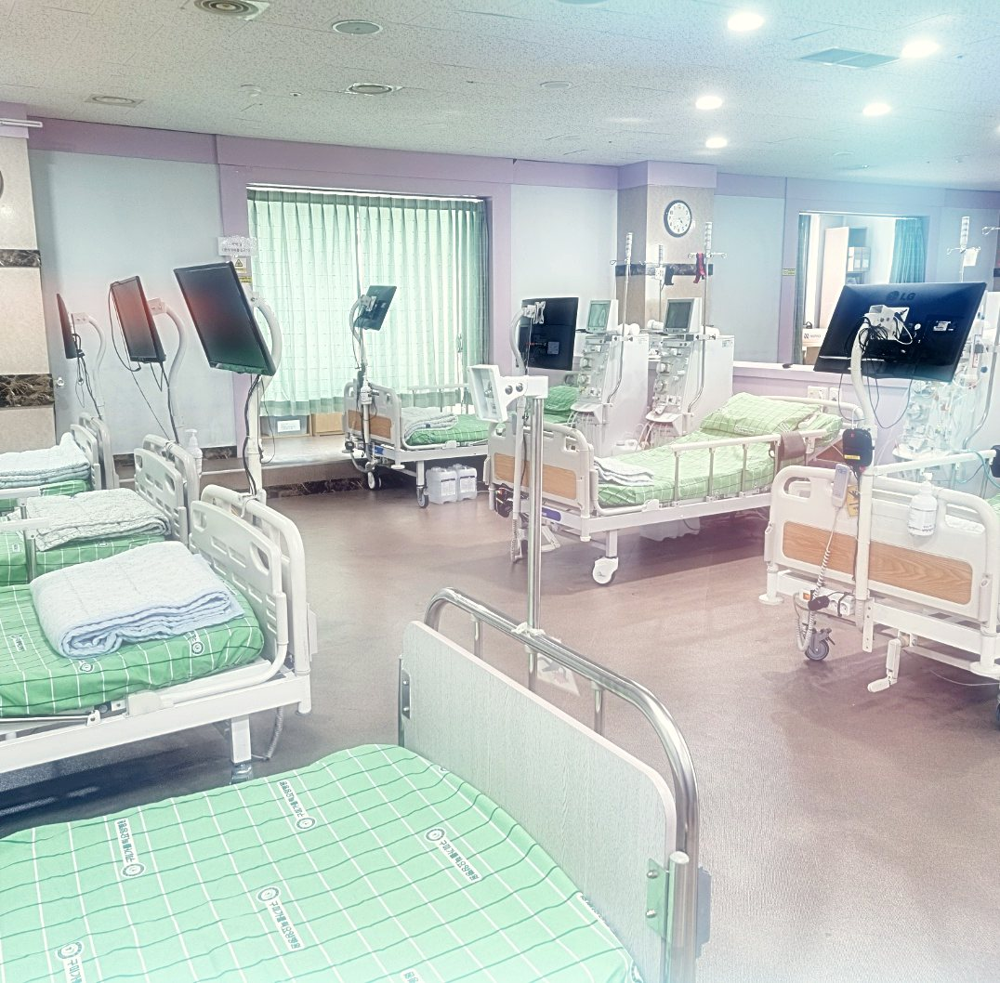
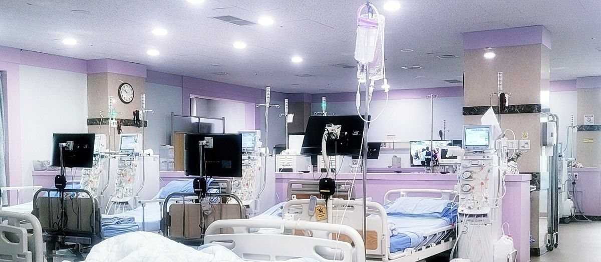
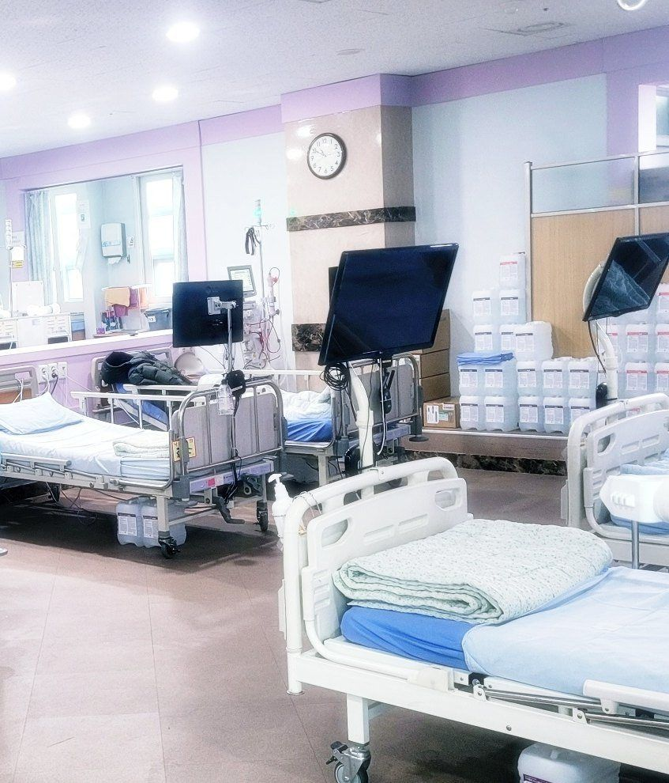
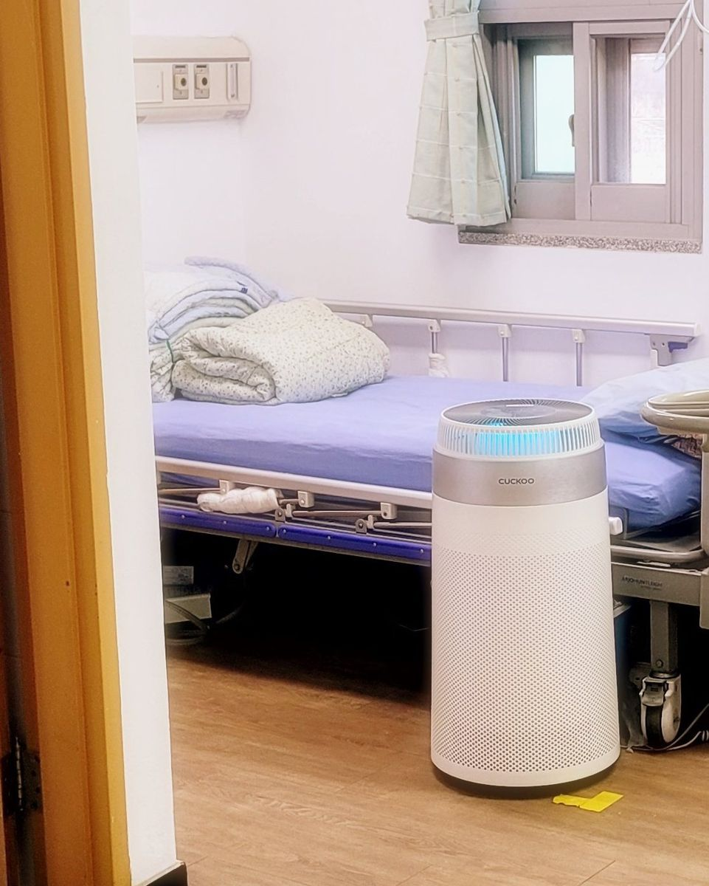
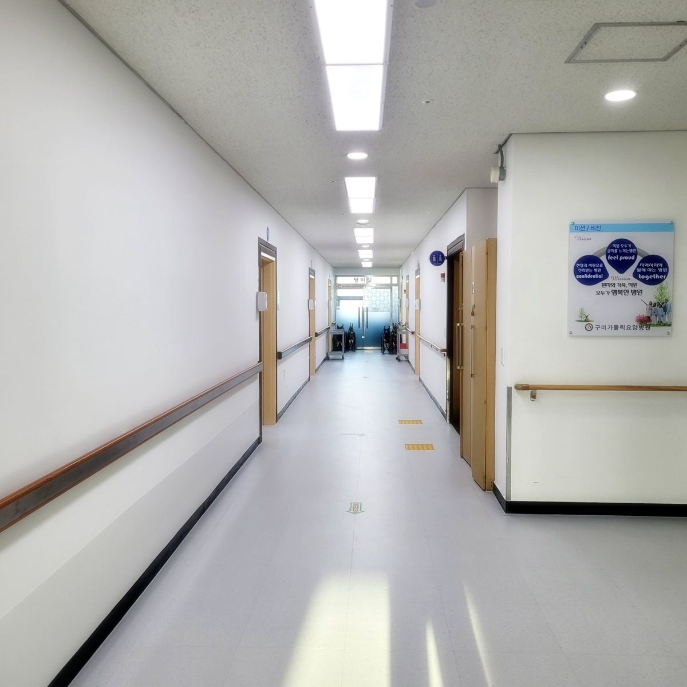
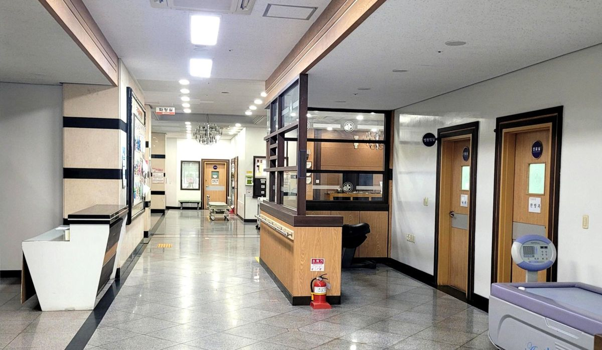
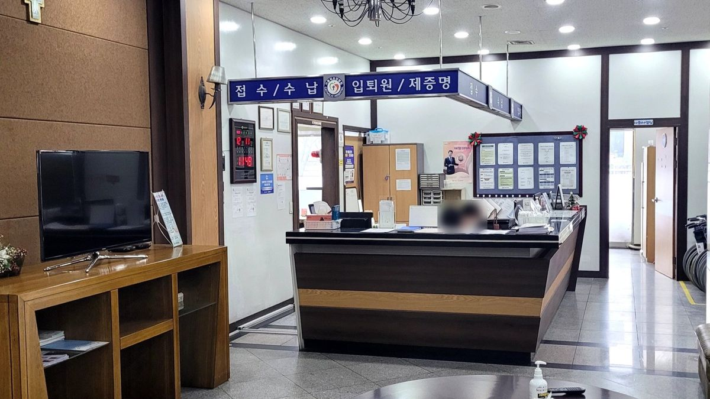
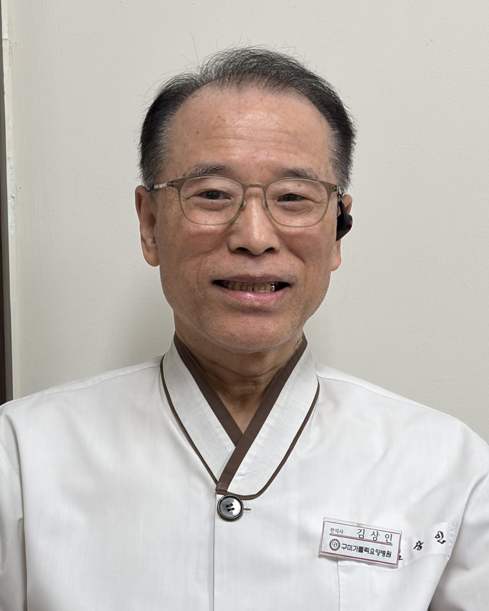

현재 치료 상황부터
다른 병원에서 투석을 받고 계셔도 입원을 상담하실 수 있습니다. 현재 치료 상황을 말씀해 주시면 필요한 확인 절차를 안내합니다.
365일 24시간 상담 신청신청하시면 24시간 안에 연락드립니다

내과 전문의
· 한의사 진료
10년 이상
투석 중심 요양병원 운영 경험
병원 내
인공신장실
의료기관평가인증원 인증 요양병원인증기간 2023. 9. 10. – 2027. 9. 9.
병원 둘러보기
인공신장실과 병실, 복도와 1층 원무과의 실제 모습입니다.
2층 재활센터 운영 중
새로 마련한 재활센터를 운영하고 있습니다. 자세한 내용은 상담으로 안내해 드립니다.






의료진·약사 소개
구미가톨릭요양병원의 대표원장, 약사, 한의사입니다.

투석 진료
다른 병원에서 투석을 받고 계셔도 입원을 상담하실 수 있습니다. 현재 치료 상황을 말씀해 주시면 필요한 확인 절차를 안내합니다.
환자에게 필요한 이동 도움과 간병, 병실 생활에 대해 상담하세요.
상담을 통해 의료 서비스가 필요하면 요양병원으로, 일상생활 돌봄이 필요하면 요양원으로 연결해 드립니다.
희망하시는 입원 시기와 기존 투석 일정을 알려 주세요. 환자 상태와 병원 상황을 확인한 뒤 가능한 일정을 안내합니다.
일반 입원·투석 입원 안내
투석을 받지 않는 분도 입원을 상담하실 수 있습니다. 전화하거나 원클릭 상담을 신청해 주세요. 토·일요일에도 입원합니다.
일반 입원과 투석 입원 모두 같은 창구로 문의하세요. 웹 신청에는 연락받을 분의 이름과 전화번호만 준비하시면 됩니다.
일반 입원: 현재 치료 상황, 필요한 도움, 희망 입원 시기를 확인합니다.
투석 입원: 현재 투석 요일·시간대도 함께 확인합니다.
의료진이 개별 상태를 검토하고 병상 상황을 확인합니다. 투석 입원은 투석 일정도 확인합니다. 필요한 진료 자료와 전달 방법은 상담에서 안내합니다.
확인 결과에 따라 입원 가능 여부와 개인별 비용을 안내합니다. 입원이 결정되면 일정과 준비 사항을 함께 확인합니다.
365일 24시간 신청할 수 있습니다. 신청하시면 24시간 안에 연락드리며, 주말에도 연락드립니다.
치료 상황과 진료 자료는 신청창에 입력하지 않고, 직원과 연결된 뒤 상담에서 확인합니다.
30일 입원 비용 예시
30일 기준 본인부담금을 약 60만원, 간병비를 약 30만원으로 놓으면 합계는 약 90만원입니다.
아래는 본인부담금 약 60만원과 간병비 하루 1만원을 기준으로 계산한 예시입니다. 실제 금액은 환자군과 입원 일수에 따라 달라질 수 있습니다.
2026-10-07 안내 기준입니다. 위 금액은 확정 견적이 아닌 계산 예시이며, 실제 비용은 개인별로 확인해야 합니다. 건강보험 적용, 식대·병실료·비급여 등 포함·별도 항목을 상담에서 확인해 주세요.
자격에 따라 입원 진료비 부담이 줄어들며, 일부 대상자는 급여 진료비가 면제됩니다.
위 기준은 급여 진료비에 대한 안내입니다. 식대는 일반적으로 20%를 부담하며, 간병비·비급여·별도 부담 항목은 따로 확인해야 합니다. 산정특례나 등록장애인 의료비 지원 등이 적용되면 부담이 더 줄어들 수 있습니다.
차상위계층이라는 이유만으로 자동 면제되는 것은 아닙니다. 상담 시 의료급여 종별 또는 차상위 본인부담경감 등록 자격을 알려주시면 개인별 적용 조건과 예상 비용을 확인해 드립니다.
2026-10-07 공식 기준 확인. 출처: 심평원 의료급여 본인부담 기준 · 심평원 차상위 본인부담 기준
자주 묻는 질문
네. 현재 치료 상황을 알려 주시면 병원에서 필요한 자료와 확인 절차를 안내합니다. 입원 가능 여부는 개별 상태와 병원 상황을 확인한 뒤 결정합니다.
환자 상태와 병상 상황을 확인해야 하며, 투석 입원은 투석 일정도 확인합니다. 전화 또는 원클릭 상담으로 문의해 주세요. 희망 입원 시기는 직원과의 상담에서 알려 주시면 됩니다.
네. 토·일요일에도 입원합니다. 주말에는 원클릭 상담을 신청해 주시면 주말에도 연락드립니다. 입원 가능 여부와 일정은 환자 상태와 병상 상황을 확인한 뒤 안내합니다.
네. 투석을 받지 않는 분도 같은 전화나 원클릭 상담창으로 문의하실 수 있습니다. 직원과 연결된 뒤 현재 치료 상황과 필요한 도움, 희망 입원 시기를 확인하고 병원 검토 후 안내합니다.
상담을 통해 환자분의 상태와 필요한 도움을 함께 확인합니다.
의료 서비스가 필요하면 요양병원으로, 일상생활 돌봄이 필요하면 요양원으로 연결해 드립니다.
실제 입원·입소 가능 여부는 의료진의 판단과 각 기관의 이용 조건을 확인한 뒤 안내합니다.
현재 치료 상황과 희망 입원 시기를 먼저 알려 주세요. 필요한 진료 자료와 제출 방법은 병원 안내에 따라 준비하시면 됩니다.
30일 입원을 예로 들면 약 90만원입니다. 본인부담금 약 60만원과 간병비 약 30만원(하루 1만원 기준)을 더한 계산 예시입니다.
확정 견적은 아니며, 환자군·입원 일수·건강보험 적용과 식대·병실료·비급여 등 포함·별도 항목에 따라 달라집니다. 개인별 비용은 상담에서 확인해 드립니다. 비용 예시 자세히 보기
네. 의료급여 1종과 차상위 희귀·중증난치·중증질환 경감 대상자(C유형)는 급여 입원 진료비 본인부담이 원칙적으로 면제됩니다. 의료급여 2종은 일반적으로 10%, 차상위 만성질환 등 경감 대상자(E유형)는 14%를 부담합니다.
식대·간병비·비급여는 따로 확인해야 하며, 차상위계층이라는 이유만으로 자동 면제되지는 않습니다. 자격을 알려 주시면 개인별 적용 조건을 확인해 드립니다. 의료급여·차상위 안내 보기
네. 정식 이름은 구미가톨릭요양병원이며, 경상북도 구미시 야은로 483(도량동)에 있습니다. 대표전화는 054-455-8883입니다.
네. 1년 동안 낸 건강보험 본인부담금이 소득 구간별 상한액을 넘으면, 넘은 금액을 국민건강보험공단이 다음 해에 돌려줍니다. 요양병원 입원은 병원에서 미리 정산하지 않고 공단의 사후환급으로 받습니다.
같은 해 요양병원 입원이 120일을 넘으면 더 높은 상한액(2026년 143만~1,096만원)이 적용됩니다. 간병비와 비급여는 상한제 계산에 들어가지 않으며, 상한액 구간은 개인별 건강보험료로 정해져 공단에서 확인하셔야 합니다.
2026-10-07 공식 기준 확인. 출처: 공단 2026년 본인부담상한액 안내 · 공단 본인부담상한제 개요
상담·오시는 길
경상북도 구미시 야은로 483 (도량동)
네이버 지도에서 위치 보기 ↗병원 층별 안내판 기준(2026년 9월 현장 사진 확인).
전화 상담 · 평일 오전 9시 – 오후 6시
주말에는 원클릭 상담을 신청해 주시면 주말에도 연락드립니다
환자 상태와 필요한 돌봄을 확인해 안내합니다.
병원 소식 보기 ↗요양원 입소와 재가 서비스는 병원 입원과 구분하여 상담합니다.
함께 생활하는 돌봄
집으로 찾아가는 돌봄